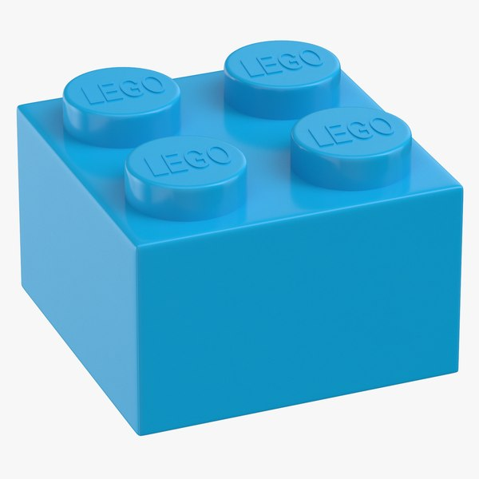

flowchart LR
subgraph call[function call]
call_["call_circle_area(3)"]
variable_passed["variable passed: 3"]
variable_returned["return variable stored in variable: circle_area"]
end
subgraph function[function calc_circle_area]
subgraph implementation_["internal implementation"]
implementation[area = 3.14 * radius**2]
end
subgraph interface["interface"]
input[input arguments: radius]
output[output: return area]
end
end
output ---> variable_returned
variable_passed ---> input
Procedural programming
It all started with the spaghetti
At the begining, when computers were simple, when programs were very small and performed just one task programmers didn’t need to worry about dividing the code in modules/parts/sections that dealt with different tasks. However, very soon computers became more powerful, programs grew and code became unwieldy and the spaghetti code was born. Programmers thought about how to solve the issue, on how to unravel the spaghetti, and they came with the idea that they had to divide the code into small subtasks. This allows for:
- The reuse of these small pieces of functionality.
- The division of labor in teams of programmers in which different people can implement and maintain different parts of the code.
- The testing of the functionality of every piece of code. If every module has a well defined task to do, we can test if that code is doing what is supposed to be doing.
If you are writing a small script that performs a just one very well defined and small task, it might be OK not to structure your code. But for anything else, thinking about the structure is one of the most important programming tasks; and the main question to answer is: how do I divide this code into pieces that:
- perform only one task
- have access only to the data that they require to complete the task
- have a well defined interface
Of course, not all programmers are experienced and disciplined and lots of code is unstructured, an entangle mess. Spaghetti code might work, but it is unmaintainable: bugs are difficult to fix, features impossible to add, and new programmers unfamiliar with the code will have a hard time working with it.
Fortunately programmers are resourceful, and very soon they realized that the key to maintainable code was to divide it in small pieces that performed a well defined task and that communicated with the rest of the program only through its declared interface. Different programming paradigms have been proprosed to help structuring the code, like Object Oriented Programming (OOP) or Functional Programming, but the most basic one, and a very used one, is Procedural Programing.
Functions to disentangle the spaghetti
Programmers thought about how to create these subtasks, these small pieces of functionallity, and they created the idea of the function. By the way, functions are also known as procedures, subroutines and many other, more or less, synonymous terms, but we are just going to use the term function. They are the key tool used to structure the code, they are the fundamental building block in all the main programming paradimgs: Procedural, Object Oriented and Functional Programming.
Spaghetti approach:
Procedural approach:
Functions are isolated blocks of code
A function is a named section of a program, a block of code, a sequence of instructions grouped under a single name, that performs a specific task and that can be invoked, called, by other parts of the program to carry out that task. In Python functions are defined by using the def statement.
A function is a somewhat isolated block of code, a box with some inputs and some outputs. They are somewhat similar to a mathematical function, they might take some inputs, that could be numbers of any other kind of data, they do some calculations, some transformations, and they might return a result.
The function:
- might take some data into the function
- performs an action
- might return some data out of the function
It is useful to think about the function as an action carried out on some data. Usually the data is a thing, like a cicle, and the function is an action performed on that thing, like calculting an area. Take that into account when naming the functions, they are actions and they take data related to things, nouns. A function name like “calc_circle_area()” reflects the action, a name like “circle_area()” does not.
The function can be divided in:
- an interface: the part of the function that interacts, interfaces, with the rest of the program
- an implementation: the details about how the action is carried out
A function can be thought as as a lego piece that has a defined shape and that we could use in our projects every time that we need that particular shape.

The interface of the function is its shape, everytime that we need to perform an action on a piece of data we can use that function, that block of code, in the same way.
When thinking about the program structure, it is useful to fix our attention of the interfaces of the different parts of the program, on the shapes of the different blocks, because that is how the whole program will fit together, through its interfaces. The implementation of each part could be regarded almost as a detail. For instance, we could change the implementation the previous function without changing its interface.
An interface is a kind of contract, we are committing ourselves to providing a functionality that will be served by that particular interface, and as long as the caller continues using the same interface the function will continue honoring the contract, providing its functionality.
The advantages of modularity
This is one of the big advantages of the procedural programming, we can divide the program into smaller, and somewhat independent pieces of code, because we have limited the interaction between different parts of the program to their interfaces. We have turned a big piece of code into a collection of small interacting modules, a plate of spaghetti into a lego construction. This modularity is key and it helps with:
- Understanding the code: it is easier to understand little pieces that have well defined responsibilities than a huge blocks of code. It is easier to understand how a lego construction works than a plate of spaghetti. New programers, or even programmers already familiar with the code, will have a better time, a lower cognitive load, and will need less time understanding what the program is doing and how is doing it.
- Bug fixing: it is much easier to locate which part of the code is responsible for a particular bug, like the calculus of the circle area if the functionality of the program is divided into small pieces. If an error occurs in a program organized with functions, a developer can locate and correct the error more quickly than in a poorly organized code.
- Testing: it is possible to check if a block of code is honoring its interface, because it now has an interface, a contract, to honor.
- Extendability: new functionalities will be also easier to create. It is much easier to add new pieces to a lego construction than to a mess of spaghetti.
Code reuse
Functions allow us to structure the code in parts, they enable breaking down a program into smaller, more manageable, modules, and, in that way, we can break a complex problem into a series of simple tasks. Imagine that we have a program that calculates the area of a rectangle.
This program accomplishes its task, but if we want to calculate the area for two rectangles we would have to repeat the same code twice.
In programming a good rule of thumb is: Don’t Repeat Yourself, this is the DRY principle. Imagine that now we want to change the way in which the result is printed, for instance because we want to write the result into a file; we would have to rewrite every instance of the print that we have in our program.
However, if we would had written our program using a function, we would had avoided repeating the code in the first place. We are reusing the code, and that is a nice principle to have in mind when we are programming.
Code reuse, for instance, eases the implementation of new features. Imagine that now we want to write the result into a file instead of printing it in the console. With this new structure we would just need to change one function and the corresponding function calls and not like before, that we had to change every instance of the duplicated code.
In this case we have changed the function and the function calls (because we have to include the file object) to that function.
One function, one task
Even better, we could structure the program by splitting the tasks carried out by the current function, calculating the area and printing the result, into two functions, one that calculates the area and another one that prints the result.
This change might seem small, but it has several advantages:
- The program parts are now smaller and easier to understand and to test
- We can calculate areas without printing them and we could print them without calculating them
- We can create different printing functions, like one for printing into a file and another one for printing in the console.
- Different aspects of the program, like the math operations and the output could be taken care by different people or teams of programers. This is not important for this small program, but it might be critical for larger ones.
Scope
To understand what do we mean when we say that we pass some data to a function we need to understand the concept of the scope.
When we are programming we store and access data in memory. As we have seen, we refer to the data stored in memory by using variables. We could think that those variables, once they are created, are available in every part of our program. If you would used that approach when you tried to build a program with more than a few lines of code, it would become very difficult to track which part of the program had changed a variable. So maintining those large programs would be very difficult.
Functions do not only structure the code in logical blocks, but they also limit the data that every one of those blocks can access. Functions can use:
- the variables that are defined inside them.
- the arguments that we pass to them.
We say that functions define a scope, an area of the program in which certain variables can be accessed. In a computer program not all data is available to every part of the code. The scope defines where in the code a variable is available, and functions define their own scope. The code inside a function has its own variables, and those are not shared between functions or between the function and the rest of the code.
For instance, the variables that are defined inside a function are not available outside of the function.
We say that the variables defined in the function are in the function scope, that means that they are not available ouside of the function.
We get a “‘name’ is not defined error” because the variable name was created inside the say_hello function, so in the say_hello scope, and is not available outside. A variable can only be used when is in the current scope. It is said that the function has a local scope in which its variables are available.
To use a value inside a function, usually, we pass the variable to the function.
Schema with the scope of a function call:
flowchart LR
subgraph def["def calc_area(width, height):"]
subgraph func_scope["Function scope"]
subgraph return
ret["return area"]
end
subgraph in["function variables"]
var["area = width * height"]
end
subgraph arguments
width
height
end
end
end
subgraph result["result = calc_area(2, 3)"]
subgraph caller["Caller scope"]
subgraph result_[" "]
result__["result ="]
end
subgraph funccall["Function call"]
call1["calc_area(2, 3)"]
end
end
end
return ---> result__
call1 ---> arguments
A variable points to some data stored in memory. Strictly speaking the variable belongs to a scope, the data pointed by the variable does not. For instance, if we store an object in memory, like the value 2, that object does not belong to a scope, the variables that might point to it do.
Global scope
Be careful because Python also has a global scope, and if you create the variable outside the function it will be available inside. We can use the variables defined in the global scope inside any function.
In this case the variable name has been created in the global scope, it is a global variable available everywhere. In general, avoid creating global variables, specially if they are not immutable constants. As a general rule, the use of the global scope is discouraged, try not to use it. If you think you need a global variable, think twice, in most cases is better not to use them.
Here’s a tip for the future you, to keep states it might be much better to use objects, instances of a class, than global variables.
Just remember, try very hard not to use global varibles, although you can allow some exceptions with some immutable ones used for global configurations. (By the way, if you follow the PEP8 style guide, as you should, contants defined in the global scope are written with all capital letters.) It is common to use this kind of global variables, immutables and related to configuration, and, by convention, in Python, people name them using all-caps variable names.
However, altering variables that belong to the global scope is discuraged and trying to do so can end up in unexpected behaviours.
If you try to change a global immutable variable you might get an error.
Python allows you to modify a global variable, but you have to explicitely ask for it by using the global statement.
The global statement is a nice remainder of the problem of altering the global state.
In Python we can also alter the global state, the variables that belong to the global scope, without using the global statement. We can modify mutable objects referenced by variables that belong to the global scope.
In general, try not to abuse of the global scope. Functions were desing to modify only its scope and having side effects goes agaist the modularity achived by having functions in the first place. If you abuse of the global scope:
- Proceed at your own risk.
- Be aware, there might be dragons ahead.
- You have been warned.
You can read more about scopes and namespaces in the Python official documentation.
Passing data to a function, function arguments
So, when the function requires some data to carry an action, we should pass that data explictly to the function. For instance, if we want a function to print a personalized greeting, it could need the name of the person.
return
Scopes have also to be taken into account when getting a result out of the function.
If we want to get data out of the function we use the return statement. Let’s see how we can return data to the caller.
We use the return statement to return a value generated in the function to the caller. Again, like in the arguments passed to the function, the caller will receive a new reference to the value stored in memory that can assign to a new variable. return is used to move a result in memory between scopes. For instance, in the previous example there is a variable, inside the function, named area, but in the first call we store the reference in a variable named result. area and result are two variables, two references to the same value stored in memory, but they are variables that belong to different scopes. In this case area belongs to the scope of the calc_rect_area function and result to the global scope.
Argument and return types
Python is a dynamic language, it does not require to defined the types of the arguments and return values, and, by default, does not enforce those types even when they are defined. The type annotations are meant as a way of documenting the code.
There are typing tools, like mypy that can be used to enforce the use of the types, but they are not part of the language proper.
The function interface
Now that we have talked about how to define functions, and how to pass and get data from them, we can deliniate what the function interface is. Remember, when thinking about a function, or any other form of modularizing the code, of dividing it in pieces, take into accounts two aspects:
- the interface: how the function interacts with the rest of the program
- the implementation: how the task is carried out
For the structure of the program interfaces are more important than implementations, because if you change an implementation, for instance to speed it up or to fix a bug, the rest of the program will be unafected as long as you keep the interface. Think of the interface as a promise done to the rest of the program, as a contract that the function will honor. Thus, for the rest of the program, the implementation is just a detail, what matters is how to interact with that piece of the code. The program is a complex machine build with small, and hopefully understandable, pieces, and the interface is the shape of each piece.
We could split the interface in two: the explicit or interface proper, and the implicit interface. We could also call to these two parts: interface and side effects.
The interface proper is comprised by:
- the function name, and possible the namespace in which that name is found
- the arguments accepted by the function as well as its types
- the returned values and its types
A more suttle part of the interface, the implicit interface, or the side effects, an effect other than reading the value of the function arguments and returning the intended result. Side effects are interactions of the function with the rest of the program that are not explicitly declared like:
- any modification of the state of the objects passed to the function that are not clearly stated in the interface and, thus, not expected by the user.
- any modification to the mutable objects passed to the function not clearly estated
- any modification of the global state, like changing the value of a global variable
- any use of the global scope, like the reading of a global variable
The interface proper is the stated contract that the function explicitely declares to follow and its at the base of the software modularity. Side effects are a modularity violation and a throw back to the spaghetti code, to an unmaintainable mess. (Although, in some cases these side effects can be useful, or even completely necesary).
Name and namespace
The function name is a critical part of the function interface, if we would change it, the rest of the code that uses that function would have to be changed.
The namespace, where the function can be found, is also important. For instance, in Python the sqrt function is located in the math module of the standard library, so to use it we have to import it from there.
If the Python developers were to change the location of the sqrt function, we would have to change our code accordingly. By the way, in the Python standard library there is a different sqrt function with a different interface, a function that return complex numbers instead of floats, and we differenciate between these two functions because they are imported from different namespaces, from different modules.
Arguments
The arguments accepted by the function, as well as its types, are also part of the interface, if we were to change the arguments required or accepted, we might have to change the rest of the code, the parts of the program that make calls to the modified function.
Returned values
Returned values and types are also part of the interface, if we change what we return we will have to alter the calls to the function.
By the way, I think that it is not a very good practice to change the number or type of the values returned depending on the function call. Imagine that we did a function that returned either a float or a complex number depending on the input.
This is a well defined interface, but the caller will have to check what is getting from the function.
A better solution would be to make the caller/user of the function to deal with the two options, as the standard library sqrts functions do.
Now the caller is explicitly aware of the two possible types and will have to decide how to deal the situation.
We have the same problem when we choose to return None when the function fails to calculate the result.
In this case it’d be better to just let the error be raised, like the standard library sqrt function does. In that way the caller we’ll be aware that a problem happened, and will have to deal the the error only when it needs to, and not in every call in the call stack.
Object state change
A function could change the state of an object passed as an argument. For instance, imagine that you are reading from a file and that you pass the file object to a function, that function could change the state of the file object, for instance by consuming from the file or by closing it.
After calling to the different functions the behaviour of the program will be quite different, so the change in the state of the file object is a side effect, a implicit part of the function interface. It is always a good policy to informe to the caller/user of the function about these changes of state by making them explici t. ### Gobal variables
Another kind of side effect is to affect the global scope. This is highly discuraged, there is a global scope and many times it is reasonable to use it to read, for instance, immutable configuration variables. But altering a variable in the global state takes us back to the path of unmaintanable spaghetti code.
In Python the global scope is frequently used to store configuration constants.
Altering global variables makes the progam less modular because although the change of these variable could be considered part of the interface of the function, it is not an explicit part, it is not declared as an argument or as a return. So, by modifying global variables we get code that is more spaghetti like, and that so the program will be less maintainable.
If you think that you need to alter the global state, think twice, because, in general, this is a very bad idea. If after thinking it carefully you still think you need to do it, think it again. There is another mechanism to store states between funcion calls that respects the modularity: classes and objects. Objects are modular and they allow us to store states between calls. That is one of the big difference between the procedural and the object oriented approach.
Value change of mutable objects
In general, we could pass data to a function if two different ways by:
- copying it
- using a reference or a pointer
In the first case we copy the value. Imagine that we were passing a variable that holds the integer 2. We would pass that data to the function by creating a copy of that number in a different part of the memory and, thus, the variable inside the function would reference to a different 2 than the variable outside the function.
In the second case both variables, the one inside the function and the ones outside, would end up referencing the same value, the same 2. In some languages, like C or Rust one can chose how to proceed, do we want to copy the data or to create a reference or a pointer to it, and that is made explicit in the function interface.
One of the Python objectives was to be simple, and that is why, maybe, his creator chose to avoid this complexty and to make all arguments passings to any function by reference. Moreover, in Python all variables are always references.
- We have created a text string (“Jane”). That means that Python has created and stored a object of type str in memory.
flowchart TB
subgraph main [ ]
person:::invisible
end
subgraph say [ ]
name:::invisible
end
Memory:::memory
subgraph Memory
Jane["'Jane'"]
end
person --> Jane
name --> Jane
classDef variable fill:#f96
classDef invisible opacity:0%
classDef memory fill:#ccc
linkStyle 0,1 stroke-width:0px
- We have assigned the variable person to that string, so now person refers to that str object stored in memory.
flowchart TB
subgraph main [global scope]
person
end
subgraph say [ ]
name:::invisible
end
Memory:::memory
subgraph Memory
Jane["'Jane'"]:::variable
end
person --> Jane
name --> Jane
classDef invisible opacity:0%
classDef memory fill:#ccc
linkStyle 1 stroke-width:0px
- When we call the function we pass the reference of the object, the variable person, to the function.
- The function receives the reference to the str object and assigns to it a new reference, in this case called name. It is very important to understand that although the object is the same, the “Jane” string, we have created a new reference to it, the new variable name.
flowchart TB
subgraph main [global scope]
person
end
subgraph say [say_hello scope]
name
end
Memory:::memory
subgraph Memory
Jane["'Jane'"]
end
person --> Jane
name --> Jane
classDef invisible opacity:0%
classDef memory fill:#ccc
For immutable types having several references to the same object is not a problem at all because even if different variables hold references to the same object, none of them could change its value, but with mutable data types we have a problem. For instance, a function could change a list, that has been passed to it by a caller, by appending values to it without the caller awarenes. So, in Python mutable objects could be altered inside any function and that is part of the interface, but an implicit part.
Try to guess what will be the result of running the following code:
Give x a value in order the get the result to be 10. Should x be 4 or 6?
Tip
With lists the behaviour seems different.
Why do we get these different results?
Let’s think about what is going on.
a = "hello"flowchart TB
subgraph variables
a
b:::invisible
end
Memory:::memory
subgraph Memory
hello1["'hello'"]
hello2["'HELLO'"]:::invisible
end
a --> hello1
classDef invisible opacity:0%
classDef memory fill:#ccc
# a.upper() creates a new string, it does not modify
# the original string that remains intact in memory
# and now b refers to the new string "HELLO"
b = a.upper()flowchart TB
subgraph variables
a
b
end
Memory:::memory
subgraph Memory
hello1["'hello'"]
hello2["'HELLO'"]:::invisible
end
a --> hello1
b --> hello1
classDef invisible opacity:0%
classDef memory fill:#ccc
b = aflowchart TB
subgraph variables
a
b
end
Memory:::memory
subgraph Memory
hello1["'hello'"]
hello2["'HELLO'"]
end
a --> hello1
b --> hello2
classDef invisible opacity:0%
classDef memory fill:#ccc
With mutable objects, like lists, the result will be different.
a = ["hello", "Jane"]flowchart TB
subgraph variables
a
b:::invisible
end
Memory:::memory
subgraph Memory
hello1["['hello', 'Jane']"]
end
a --> hello1
classDef invisible opacity:0%
classDef memory fill:#ccc
b = aflowchart TB
subgraph variables
a
b
end
Memory:::memory
subgraph Memory
hello1["['hello', 'Jane']"]
end
a --> hello1
b --> hello1
classDef invisible opacity:0%
classDef memory fill:#ccc
# We are modifying the original list
b[0] = b[0].upper()
# b[0] refers to the string "hello"
# b[0].upper() creates a new string in memory "HELLO"
# so b[0] = b[0].upper() is equivalent to
b[0] = "HELLO"
# We are asking to the list refered by b, the same list that a refers to,
# to change its first member from "hello" to "HELLO"
# So we get a modified list ["HELLO"] and both a and b refer still to this list
# that is in fact the same original list, that is has changed its first memberflowchart TB
subgraph variables
a
b
end
Memory:::memory
subgraph Memory
hello1["['HELLO', 'Jane']"]
end
a --> hello1
b --> hello1
classDef invisible opacity:0%
classDef memory fill:#ccc
This is an aspect that varies from language to language. If you study a different programming language you will need to understand if the variables are ment to be values, pointers or references. In Python they are always references. You can read a Real Python tutorial about how Python pass by reference.
Changing inside the function a mutable object that have been passed to it without warning the function user is a common source of bugs and problems. This is not a good practice, try to avoid it! The previous code could be written to avoid this problem.
One way to make the change of the object inside the function, more or less, explicit is not to return the object. That is why lists methods like append, extend or sort do not return the list. The callers are made aware that they are not getting a new list and the original one is intact, no, the list that they sent to the function is changed. Well, in this case, these are not, strictly speaking, functions, but object methods, but they still could return a reference to the object. Their interface could be more similiar to the upper, lower or strip methods of the str class that do return a new str (in this case because the str objects are immutable, so unlike the lists they can not be modified and so upper cannot modify the original object, but can only create a new one that has to be returned).
Testing and modularity
Having isolated pieces of functionality and an interface defined for each piece makes possible that we test the complience of each piece to its interface. Is this piece honoring its interface/contract?
In spaghetti code we could test if the overall complex functionality of the program is working, but if we have a modular code base testing becames much more useful because we can test that each piece works, and the task carried out by every small unit is simpler and thus finding and fixing bugs is easier. Moreover, if we decide to change the implementation of, for instance, one function, but the test is still working we can be confident, although not completely sure, that the rest of the program will sill work.
Let’s show how a test would work.
Testing is a huge topic in and of itself and we won’t cover it here, but read something about unit testing. Be aware that in Python there is a module called unittest in the standard library that helps with creating tests (more about the unittest module in Real Python), but that there is another testing library: pytest. pytest is not included in the standard library, but is more modern and much more capable that unittest, and it is also very popular. You can read about pytest in Real Python or in the pytest book.